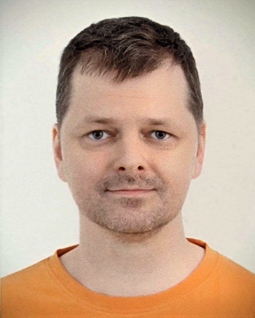

<!-- =================================================================== -->
<!-- === YOU ARE WELCOME TO WATCH THE FULL VERSION OF MY CV HERE! === -->
<!-- === It is written using Markdown and rendered using JS. === -->
<!-- =================================================================== -->
<!-- full printable CV: ?show_photo=1 -->
<!-- full printable cover letter: ?content=cover_letter&show_photo=1 -->
# Sergey Kolomenkin | <nobr>C++ / Python</nobr> <nobr>Senior Developer</nobr>
<!-- =============================================================== -->
<div id="basic_info_id" style="float: left; width: 100%;">
<div style="float: left;" id="main_photo" hidden>

</div>
| | |
|-|-|
| Loca&shy;tion | Minsk, Belarus |
| Reloca&shy;tion | I am willing and ready to move to London, UK.<br /> I will need sponsorship to obtain a visa. |
| Email | <span id="my_mail"></span><!-- ; Skype: <a href="skype:kolomenkin">kolomenkin</a> --> |
| Expe&shy;rience | 17 years in software development |
</div>
<!-- =============================================================== -->
<div id="cover_letter_content" hidden>
<!-- fix Markdown rendering for <H> header below --> <div style="display: none;"></div>
## Cover letter
<p class="about_me">
During **15+ years in C++** I was working on various projects including system programming, computer networking, multithreading, interprocess communication for destop applications, mobile apps, backend services.
For the past **2 years** I was mostly involved into **backend development using Python 3**.
</p>
<p class="about_me">
I'm looking for a challenging innovative position, where I can design technically complex software solutions and develop new cutting edge products.
</p>
<p class="about_me">
Positions in the following areas are of special interest for me: **C++, research, high-performance systems, multithreading, interprocess communication, asynchronous programming, low-level speed optimization, cross-platform compilation**.
</p>
**General strengths**
- deep knowledge and understanding of used technologies
- system design
- helping, training colleagues
- striving for stable CI/CD process, internal tools, unit tests
</div> <!-- <div id="cover_letter_content"> -->
<!-- =============================================================== -->
<div id="cv_content" hidden>
<!-- =============================================================== -->
## Major technical strengths
| | |
|-|-|
| Expert | **Cross-platform, multithreading, multiprocessing, networking**, MySQL, Bash, C++, STL, CMake, Win32 system level and high-level programming |
| Very Strong | Software design, <nobr>Python 3</nobr>, Django, DRF, Windows file system filter drivers, Docker, Linux administration, OpenVPN |
| Strong | Kubernetes, Boost, WebRTC, x86 assembler |
<!-- =============================================================== -->
<!-- <div style="page-break-after: always;"></div> -->
## Experience
### <nobr>July 2021 - now</nobr>
| |
|-|
| I quit my job to focus on preparing for faang interviews and spending more time with my family. |
### N-able (ex-Solarwinds) | <nobr>Mar 2018 - Jun 2021</nobr> | <nobr>Principal Software Engineer</nobr>
| | |
|-|-|
| Partici&shy;pation | Technical leadership in two internal startups (4-7 people). Designed an ensemble of web services. Designed and implemented backend REST services using Django, Python.<br /><br />Leaded the development of Windows kernel-mode driver and archieved impressive results in the use of C++ STL in kernel mode. Created cross-platform web services using C++. |
| Re&shy;sponsi&shy;bilities | System design, mentoring colleagues, writing code, code review, interviewing candidates, build engineering (CI/CD), unit tests. |
| Skills used: C++ | C++ 17, STL, CMake, Windows kernel mode (file system filter driver), multithreading, networking, Boost |
| Skills used: Python | Python 3, Django, DRF, JSON API, OpenAPI, type hints, pytest, flake8/mypy/&ZeroWidthSpace;pylint, pip-tools, uwsgi |
| Skills used: other | Docker, Bash, Linux administration, TeamCity DSL, SQLite, MySQL, AWS |
### Rakuten Viber | <nobr>August 2015 - February 2018</nobr> | <nobr>Senior Software Engineer</nobr>
| | |
|-|-|
| Partici&shy;pation | Development of a cross-platform C++ engine for the Viber messenger (Windows, MacOS, Linux, Android, iOS). Improved automated builds. Introducted unit tests. I was involved in system administration and monitoring. |
| Re&shy;sponsi&shy;bilities | Research, writing code, interviewing candidates, build engineering (CI), unit tests. |
| Skills used | C++ 11, STL, CMake, WebRTC, multithreading, networking, Docker, Bash, Linux administration, Boost, unit tests, Jenkins |
<!-- <div style="page-break-after: always;"></div> -->
### Optimal Software | <nobr>January 2012 - July 2015</nobr> | <nobr>Senior Software Developer</nobr>
| | |
|-|-|
| Partici&shy;pation | Design and development of a VPN solution with custom VPN client for Windows.<br /> A wide range responsibilities, from implementing a VPN client using C++ and C#, passing web services to Linux server administration and implementing custom Nginx modules. |
| Skills used | C++, STL, Boost, multithreading, networking, WinAPI, Nginx, HTTP, OpenVPN, Linux administration, Inno setup |
<div style="page-break-after: always;"></div>
### Web crawler startup | <nobr>Jan 2008 - Jan 2012</nobr> | <nobr>Owner, Software Developer</nobr>
| | |
|-|-|
| Partici&shy;pation | System design, development, unit tests, system administration and monitoring |
| Skills used | C++, STL, HTTP, regular expressions, multithreading, WinAPI, Sqlite, MySQL, PHP, unit tests |
### Artezio | <nobr>February 2007 - January 2008</nobr> | <nobr>Senior Software Developer</nobr>
| | |
|-|-|
| Partici&shy;pation | Software development, refactoring legacy, writing unit tests |
| Skills used | C++, COM, ATL, STL, WinAPI |
### Applica | <nobr>April 2004 - August 2006</nobr> | <nobr>System Software Developer</nobr>
| | |
|-|-|
| Partici&shy;pation | <ul><li>Development of various low-level tricks with Windows: Gina replacement, API hooking, kernel debugging.<br /> <li>Tricks with tcp/ip stack on Windows: NDIS, TDI, LSP filtering.<br /> <li>Reverse engineering.<br /> <li>Manual decoding of high-level network protocols from an Ethernet packet flow. |
| Skills used | C++, MFC, WinAPI, ASP, IDA, WinDbg, SoftIce, NSIS |
### Ispirer | <nobr>June 2003 - April 2004</nobr> | <nobr>Software Developer</nobr>
| | |
|-|-|
| Partici&shy;pation | It was a part-time job in my last year at university. I was engaged in development, improved SQL parsing, improved SQL syntax conversion between different database providers.<br /> I have proposed and developed a special metalanguage over XSLT to simplify the transformation of syntax trees. |
| Skills used | C++, MFC, WinAPI, ADO, COM, ATL, MS XML, Xslt, Yacc, Lex, NSIS |
<!-- =============================================================== -->
<div style="page-break-after: always;"></div>
## Portfolio
| | |
|-|-|
| Educa&shy;tion | Master's degree, Computers, Systems and Networks, Belarussian State University of Informatics and Radio&shy;electronics, 2004 |
| Lan&shy;guages | English - fluent (B2, IELTS 6.5), Russian - native |
### Web site accounts
| | |
|-|-|
| Linked&shy;In | [linkedin.com&ZeroWidthSpace;/in/kolomenkin](https://www.linkedin.com/in/kolomenkin/) |
| GitHub | [github.com&ZeroWidthSpace;/kolomenkin](https://github.com/kolomenkin) |
| Stack&shy;Over&shy;flow | [stackoverflow.com&ZeroWidthSpace;/users/739731/sergey](https://stackoverflow.com/users/739731/sergey) |
### Coding contests
| | |
|-|-|
| Leet&shy;Code | [leetcode.com&ZeroWidthSpace;/kolomenkin](https://leetcode.com/kolomenkin/) |
| Google Code&shy;Jam | participation: [2011](https://www.go-hero.net/jam/11/name/Kolomenkin), [2012](https://www.go-hero.net/jam/12/name/Kolomenkin), [2013](https://www.go-hero.net/jam/13/name/Kolomenkin), [2014](https://www.go-hero.net/jam/14/name/Kolomenkin), [2015](https://www.go-hero.net/jam/15/name/Kolomenkin), [2016](https://www.go-hero.net/jam/16/name/Kolomenkin), [2017](https://www.go-hero.net/jam/17/name/Kolomenkin) |
### Limbo, open-source pet project
[Limbo](https://github.com/kolomenkin/limbo) is a lightweight single page application written in Python
with the simple ability to upload, download, list, delete files without authentication.
All files are automatically deleted 24 hours after upload.
### Task Manager Extension, open-source pet project
Task Manager Extension is a powerful open source utility that hijacks the standard Windows Task Manager and
extends it with a ton of new features. The program is not useful after Windows 7.
In 2007 I wrote an [article on Codeproject.com](https://www.codeproject.com/Articles/10462/Task-Manager-Extension)
about the Task Manager Extension.
<!-- =============================================================== -->
</div> <!-- <div id="cv_content"> -->
<!-- =============================================================== -->
<div>
<br />
Updated on: 15 of September 2021
</div>